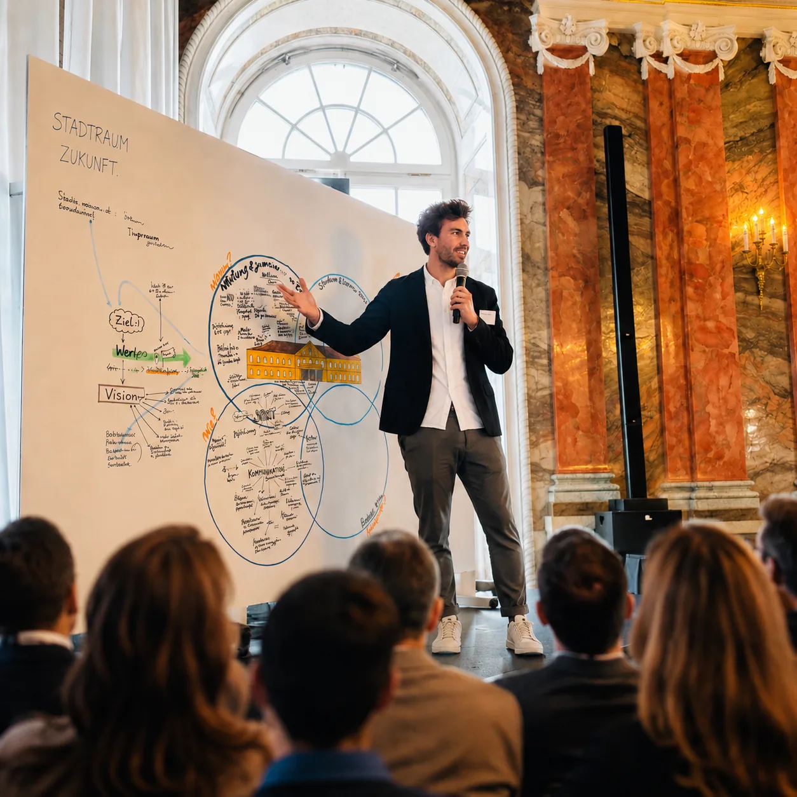
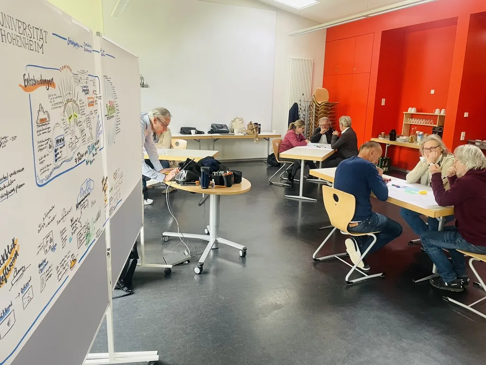

Universität Hohenheim, Vision 2040 und StrategiekonferenzUniversity of Hohenheim, Vision 2040 and Strategy Conference



Im Auftrag der Universität Hohenheim habe ich über vier Monate den Strategieprozess für die Vision 2040 und den Struktur- und Entwicklungsplan 2028 bis 2032 konzipiert und moderiert. Ich führte das Führungsteam durch vier aufeinander aufbauende Strategieworkshops und moderierte anschließend die Strategiekonferenz auf Schloss Hohenheim. Rund 150 Führungskräfte, Forschende, Verwaltungsangestellte, Studierende und weitere Mitarbeitende arbeiteten dort an gemeinsamen Prioritäten. Gemeinsam mit der Visual Facilitators GmbH übersetzte ich die Diskussionen und Entscheidungen in eine abschließende Strategievisualisierung und einen nachvollziehbaren Fahrplan. For the University of Hohenheim, I designed and facilitated a four-month strategy process for Vision 2040 and the structural and development plan for 2028 to 2032. I guided the leadership team through four connected strategy workshops and then facilitated the strategy conference at Hohenheim Palace. Around 150 leaders, researchers, administrative staff, students and other employees worked on shared priorities. Together with Visual Facilitators GmbH, I translated the discussions and decisions into a final strategy visualisation and a clear roadmap.
Als Lead Facilitator und zentrale Ansprechperson verantwortete ich Kundengewinnung, Auftragsklärung, Prozessarchitektur und Moderation. Ich bereitete die Termine mit dem Projektteam vor, führte das Führungsteam durch anspruchsvolle Diskussionen und sicherte Entscheidungen, Verantwortlichkeiten und nächste Schritte.As lead facilitator and main point of contact, I was responsible for client acquisition, clarification of the brief, process architecture and facilitation. I prepared each session with the project team, guided the leadership team through demanding discussions and secured decisions, responsibilities and next steps.
Grundlagen für die gemeinsame Vision 2040, strategische Prioritäten für den SEP 2028 bis 2032, Dokumentation der visuellen Strategie und ein verstärkter fakultätsübergreifender Dialog.Foundations for the shared Vision 2040, strategic priorities for the 2028–2032 plan, documentation of the visual strategy and a strengthened cross-faculty dialogue.
- Universität HohenheimKunde für Vision 2040, vier moderierte Strategieworkshops und die Strategiekonferenz mit rund 150 Teilnehmenden.
- Visual Facilitators GmbHKooperationspartner im Strategieprozess der Universität Hohenheim.
- University of HohenheimClient for Vision 2040, four facilitated strategy workshops and the strategy conference with around 150 participants.
- Visual Facilitators GmbHCollaboration partner on the University of Hohenheim strategy process.